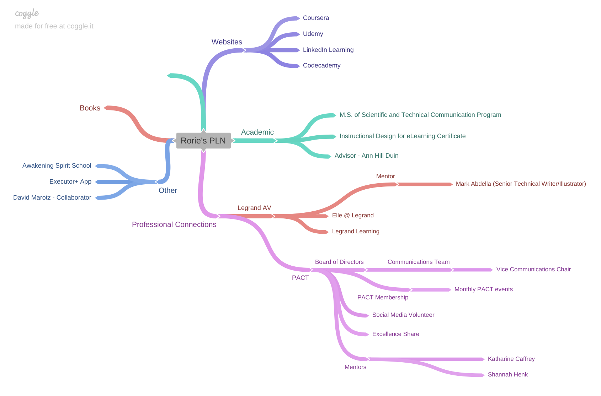
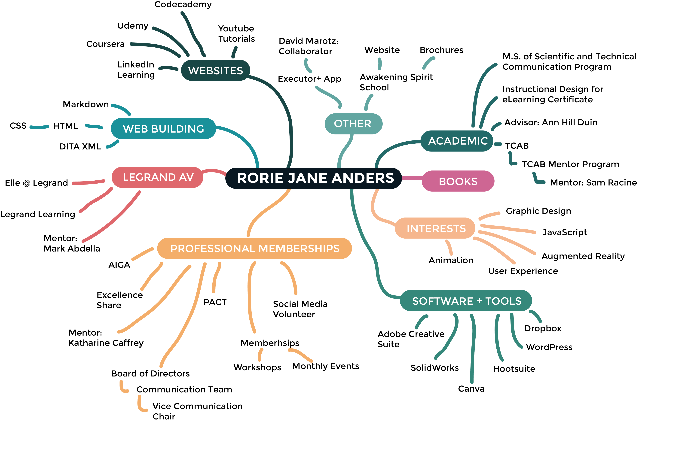

-
HOME
The following pages illustrate some of the ways I have expanded my Digital Literacy as a Technical Communicator.
DIGITAL LITERACY
"The ability to leverage media literacies and knowledge of information and communications technology, and relevant interpersonal skills, to succeed in a digital space. Digital literacy means assessing sources of information, using technologies responsibly, adapting tools to new purposes, and keeping up with the evolving technology landscape."
PERSONAL LEARNING NETWORK
The network of resources that support your learning-- the people, organizations, technologies, spaces, communities, etc. that you leverage as a learner.
I decided that I wanted to update my Personal Learning Network map to see the differences in how I have grown and how my perception of available networks has changed. I felt as though I have learned a lot of new tools and skills this year which has greatly increased my competency and confidence in what I do. Compared to my original PLN and reflection, I am still proud of the Professional Connections I have acquired. I was able to expand upon it further the past few months by joining the TCAB Mentor Program and being assigned a Mentor. Though we have had little time to chat thus far, I am excited for the prospects of gaining advice and knowledge on how I can best advance my career. In my original reflection, I noted that I was excited to expand the "Other" section for my network. Looking at how I arranged my PLN now, I feel as though I have made a good start on gaining more experience with different digital platforms. It is amazing to think of how much growth I have made in just one semester. As someone who is constantly pushing themself to newer, greater goals, I look forward to continually growing in these areas, gaining new areas to add to my network, as well as find new opportunities for growth in my workplace and professional organizations.
Original Personal Learning Network

Updated Personal Learning Network
